👋 Hi, I'm
I predict when structures crack ✈️🔩
MS Aerospace Engineering | Structural Integrity | Fatigue & Fracture | Composite and Metal Analysis | Material Engineering
I hold an MS in Aerospace Engineering from Auburn University (2026), specializing in structural integrity, fatigue & fracture mechanics, and composite materials. My work focuses on predicting material failure, crack propagation, and reliability of engineering systems under realistic loading conditions.
I build my own engineering tools: fatigue crack growth with the Paris, Walker, and Forman models, and composite laminate analysis with Classical Lamination Theory (CLT). I check them against published worked examples, because a tool you can't validate is just a pretty plot. 🙂
My technical experience spans finite element analysis, fatigue life prediction, fracture mechanics, and composite failure modeling, with hands-on experience in Python, ANSYS, and engineering simulation workflows.
I'm based in Hyderabad and looking for opportunities where I can apply structural mechanics to high-impact engineering problems in aerospace, energy, and advanced manufacturing.
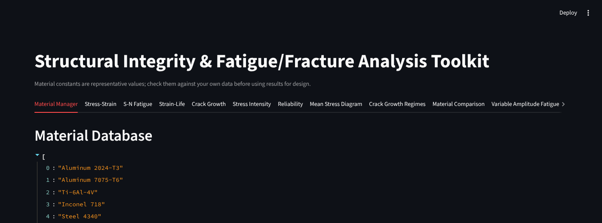
A Python structural integrity toolkit for fatigue life prediction, crack growth simulation, and probabilistic reliability analysis. Implements Paris, Walker, and Forman models with stress intensity evaluation, rainflow counting with Miner's rule, mean stress correction, and Monte Carlo simulation.
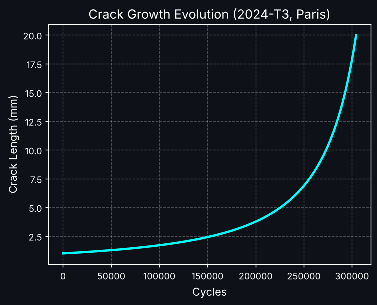
Crack growth evolution 📈
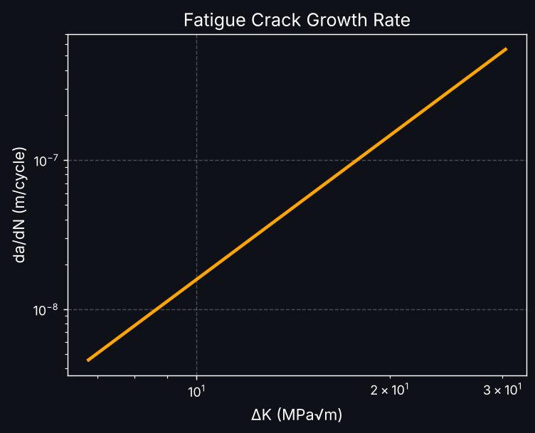
da/dN vs ΔK curve.
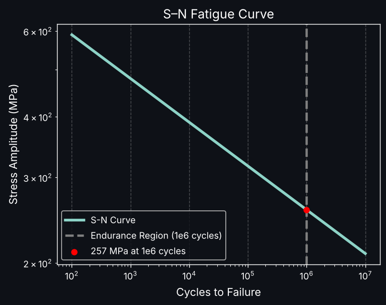
S-N fatigue curve.
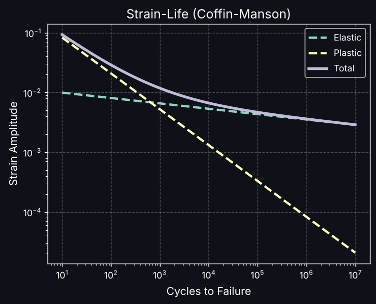
Strain-life model.
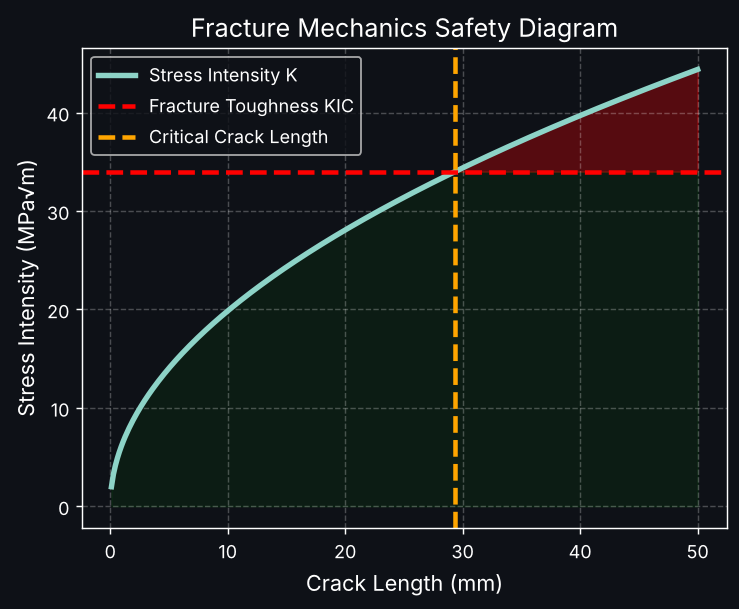
Stress intensity factor.
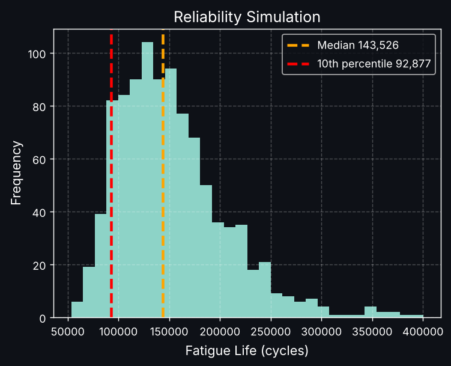
Monte Carlo reliability.
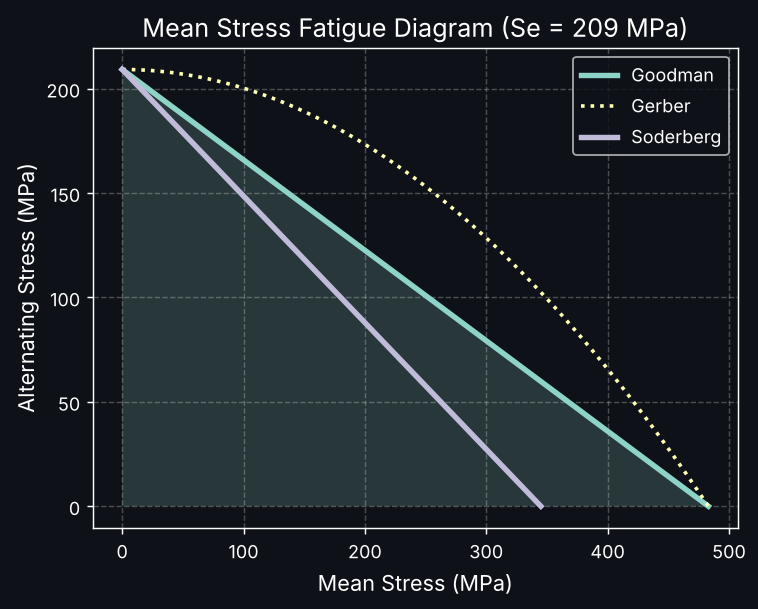
Mean stress (Haigh) diagram
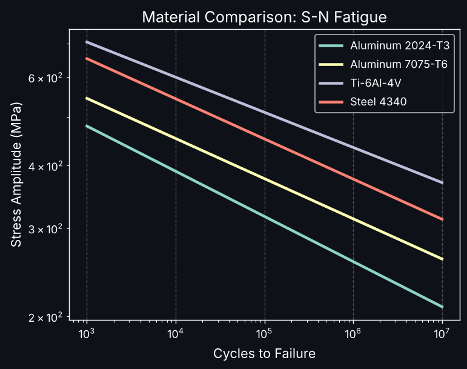
Material comparison.
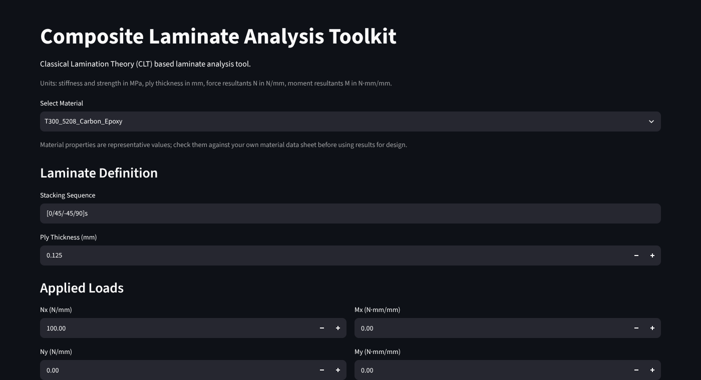
A Classical Lamination Theory (CLT) tool for predicting laminate response, ply-level stresses, and failure using Maximum Stress, Tsai-Hill and Tsai-Wu criteria, with progressive failure simulation, layup optimization, and PDF reports.
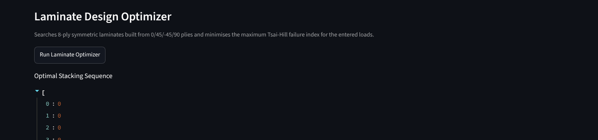
Laminate optimization.
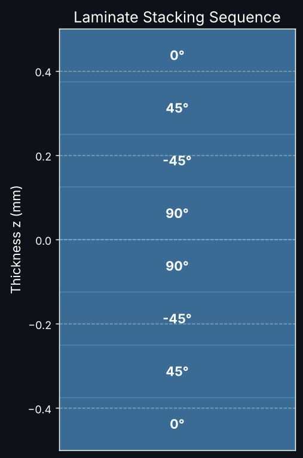
Ply stacking sequence.
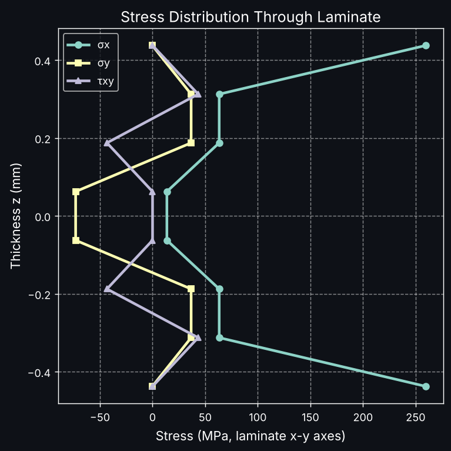
Stress distribution.
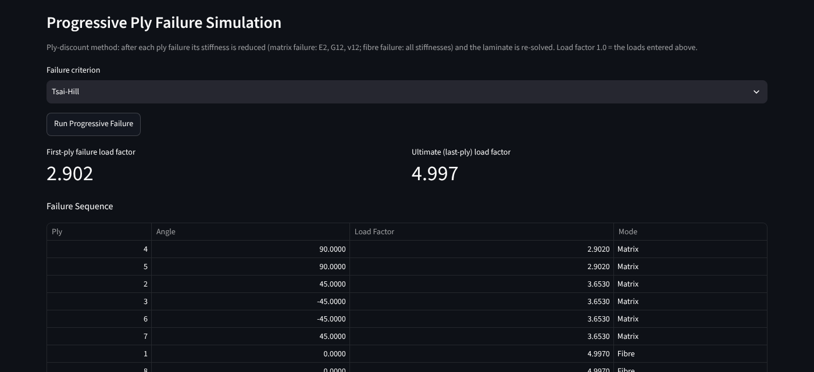
Progressive failure: 2.9× first ply, 5.0× ultimate 💥
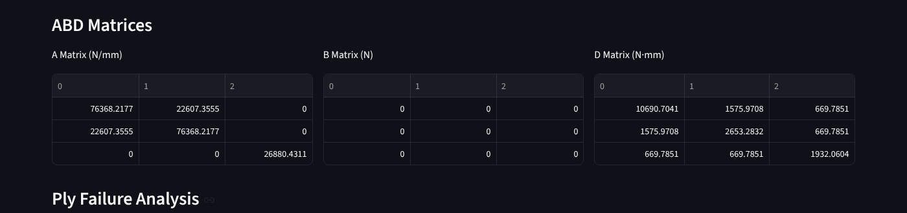
ABD matrices.
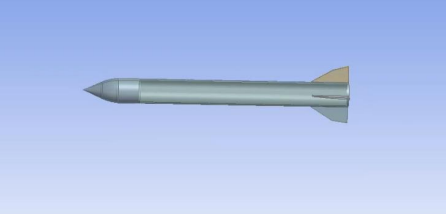
CFD simulation of a missile in hypersonic flow (Mach 10, 90 km altitude, 5° angle of attack) using ANSYS Fluent, solving Navier-Stokes equations with the k-ω turbulence model. Evaluated lift/drag, pressure distribution, velocity-Mach contours, and shock formation. Also ran modal analysis of a titanium high-pressure turbine blade under rotational and aerodynamic loading.
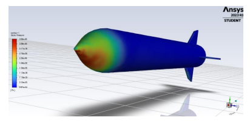
Pressure contour at Mach 10.
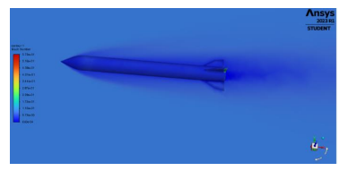
Velocity-Mach distribution.
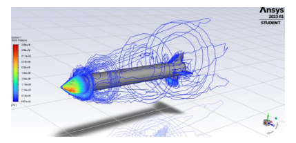
Shock cone formation.
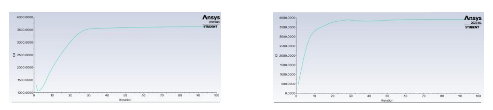
Lift and drag coefficients.
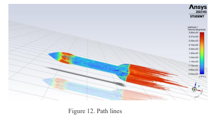
Path Lines.
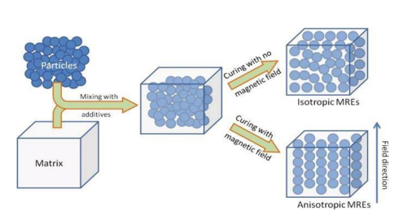
Investigated how humidity aging changes damping in silicone-based magnetorheological elastomers (27 vol.% carbonyl iron). Free-vibration tests with LabVIEW data acquisition and logarithmic-decrement analysis showed a 15–21% increase in damping ratio and up to a 20% drop in natural frequency after 2 weeks of exposure.
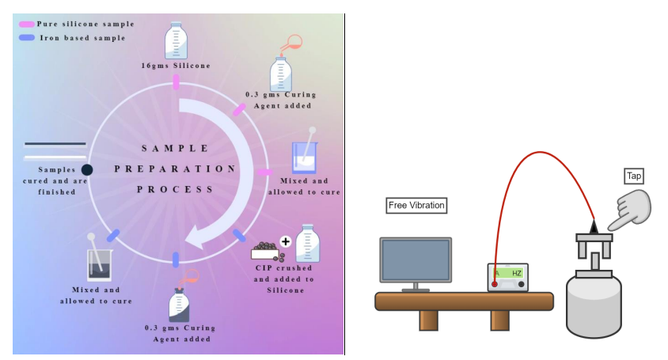
Experimental setup with accelerometer.
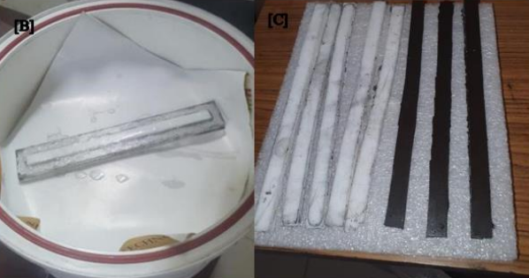
Sample preparation (silicone + CIP).
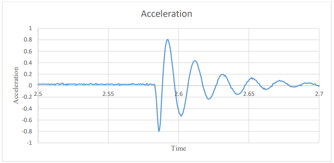
Damping ratio variation.
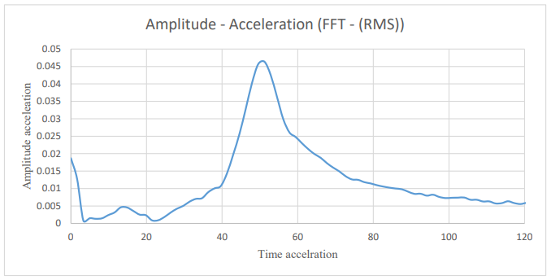
Natural frequency response.
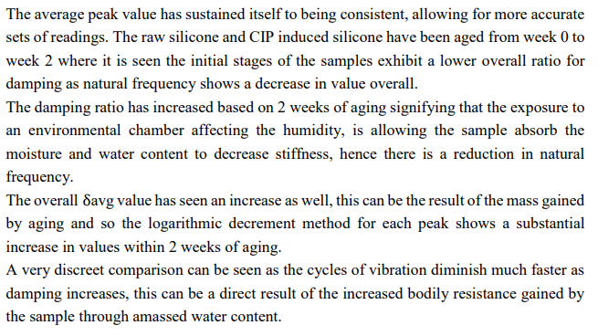
Week 0 vs Week 2 comparison.
I ran both toolkits on published worked examples and compared the numbers. Finding the mismatches was the useful part: it caught real bugs in my first versions.
| Check | Published | My toolkit | Difference |
|---|---|---|---|
| Laminate stiffness, [0/60/-60] A11 (Kaw) | 1.146e9 N/m | 1.150e9 N/m | +0.4% |
| Ex of [0/90/0] (Kaw) | 124.5 GPa | 125.1 GPa | +0.5% |
| First-ply failure load, Tsai-Wu (Kaw) | 7.277e6 N/m | 7.274e6 N/m | −0.05% |
| Last-ply failure load, max stress (Kaw) | 1.5e7 N/m | 1.5000e7 N/m | 0% |
| Paris-law life, SAE 1020 edge crack, 1 → 68 mm (Glinka) | 128,792 cycles | 128,697 cycles | −0.07% |
| Rainflow counting, ASTM E1049 example | 5 cycle ranges, counts 0.5 / 1 / 0.5 / 1.5 / 0.5 | identical | 0 |
Not yet checked against published data: Walker and Forman models, mean-stress corrections, Monte Carlo reliability. Material constants are representative values.
Gowra Aerospace Technologies · Product Engineer Associate (Internship, May–Jul 2022)
Brahmastra Aerospace · Graduate Engineering Trainee (Internship, Jul–Sep 2023)
Auburn University · MS Aerospace Engineering (2026)
Manipal Institute of Technology · B.Tech Aeronautical Engineering (2023)
Looking for a structures, durability or stress analysis engineer in Hyderabad or Bangalore? I'd love to hear from you.
✉️ Abhinandan.kausthub@gmail.com 🔗 LinkedIn 💻 GitHub